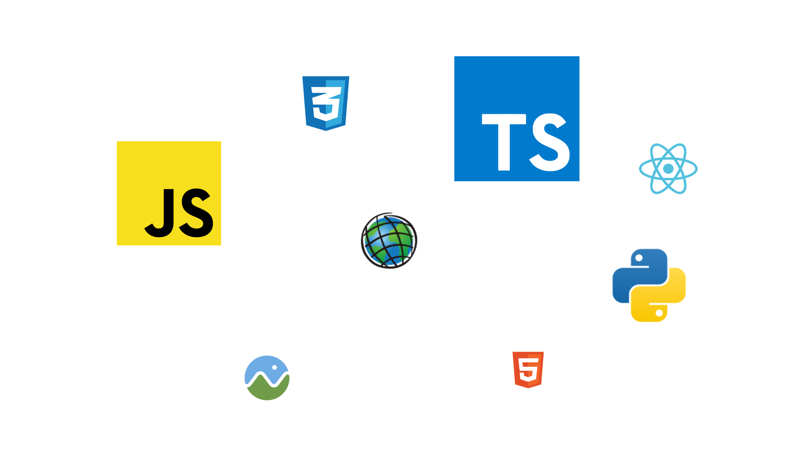

Hi, I'm Erik Brawner. As a geospatial developer, I specialize in creating innovative solutions that leverage the power of spatial data. With a passion for creating interactive and visually stunning maps, I have a deep understanding of the latest technologies and best practices in the field.
My expertise lies in developing custom applications that seamlessly integrate with various geospatial platforms, such as ArcGIS, Mapbox, and other open source solutions. I have a proven track record of delivering high-quality, user-friendly solutions that enable organizations to make informed decisions based on spatial data.
I am committed to staying up-to-date with the latest advancements in the geospatial industry, ensuring that my work is always cutting-edge and aligned with the needs of my clients. Whether it's developing interactive web applications, creating custom maps and visualizations, or integrating geospatial data into existing systems, I am dedicated to delivering exceptional results.
If you're looking for a talented geospatial developer who is passionate about creating innovative solutions, I'm your guy. Let's work together to bring your spatial data to life and drive success for your organization.
I enjoy building spatial solutions for the web using the most popular web mapping APIs in modern frameworks and libraries. For more sophisticated solutions, check them out on GitHub
From working with LiDAR point clouds to using dimensions from LiDAR to model building and structure models. These models can be brought back to ArcGIS to create a city-scale representation of real world settings.